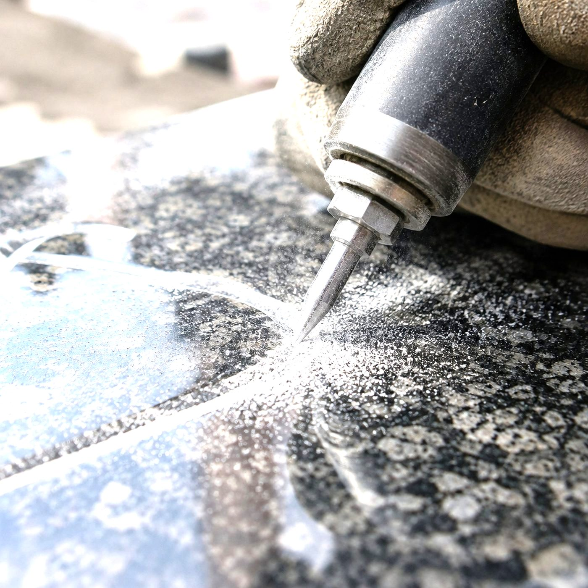
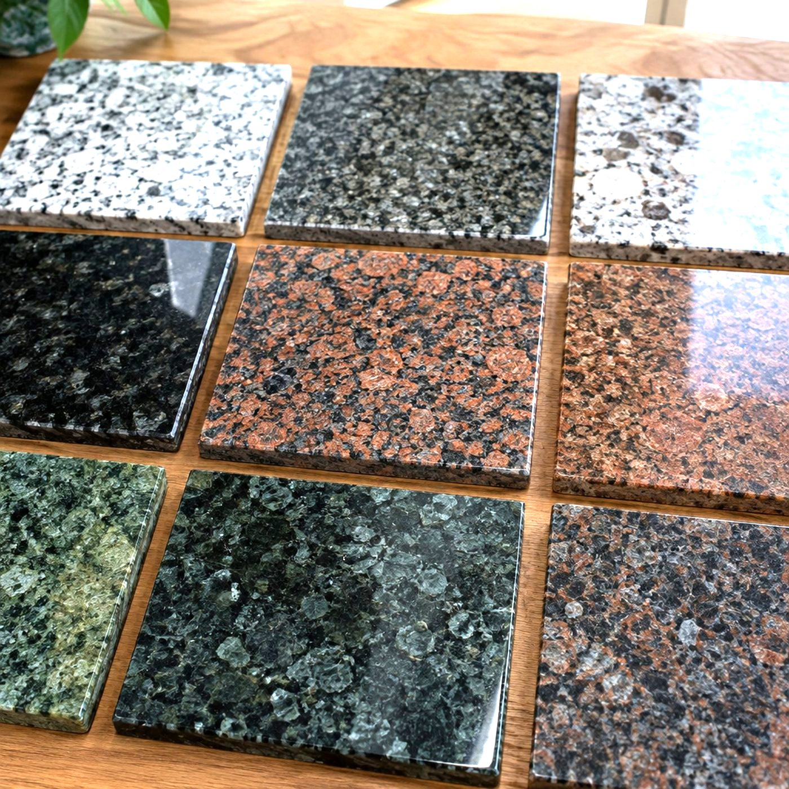

Гравировка, цветы, вазы и лампады
Портрет, текст и орнамент на граните, а также изделия для участка: цветы, вазы, лампады. Макет согласуем до работы.
Что можно нанести
Гравировка выполняется по согласованному макету: сначала вы видите, как это будет выглядеть.
Портрет
По фотографии. Качество исходного снимка влияет на результат больше, чем размер.
Текст
Имена, даты, эпитафия. Шрифт подбираем так, чтобы читалось издалека.
Орнамент и символы
Растительные мотивы, крест, рама, тематические элементы.
Обновление старой гравировки
Если надпись стёрлась или нужно дополнить её новыми датами.
Цветы, вазы, лампады
В наличии вся необходимая атрибутика и изделия для участка.
Вазы
На постаменте или с креплением в плите — устойчиво и без перекосов.

Лампады
Стекло и металл, с креплением или без.

Цветы
Живые и искусственные, сезонные композиции для цветника и вазы.
Что влияет на результат
Принесите фотографию в хорошем качестве: если снимков несколько, вместе выберем подходящий.
Вопросы по гравировке
Можно дополнить надпись позже?
Да, обычно это возможно: гравировку дополняют новыми датами.
Сколько держится гравировка?
На граните — долго, но состояние зависит от ухода и погоды. Расскажем, как ухаживать.
Нужен ли оригинал фотографии?
Достаточно качественного цифрового снимка, не переснятого с другого фото.
Обсудим макет гравировки
Позвоните или пришлите фотографию: скажем, что получится на выбранном граните.